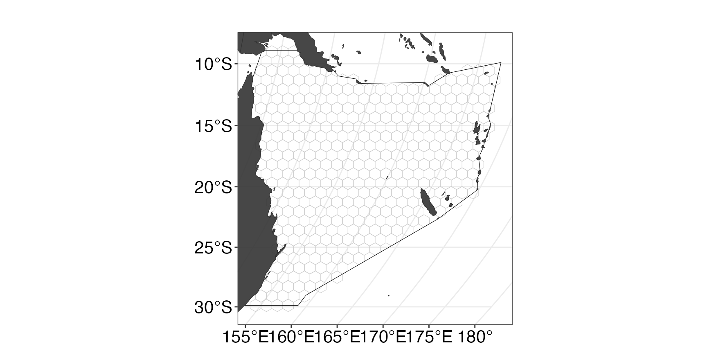
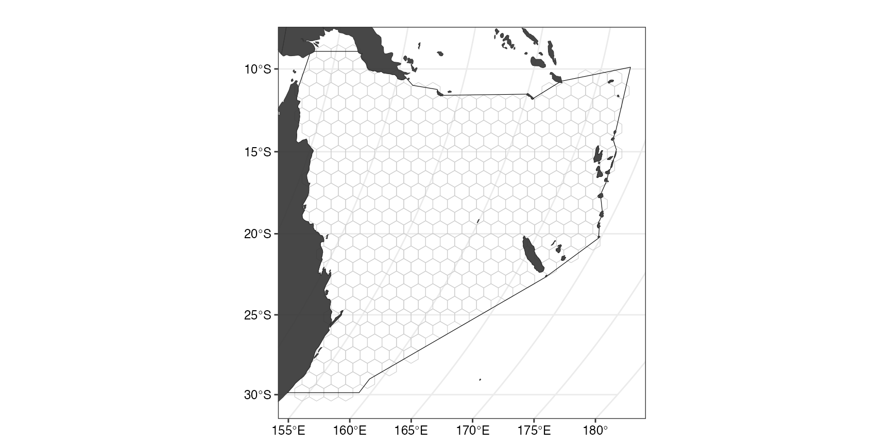
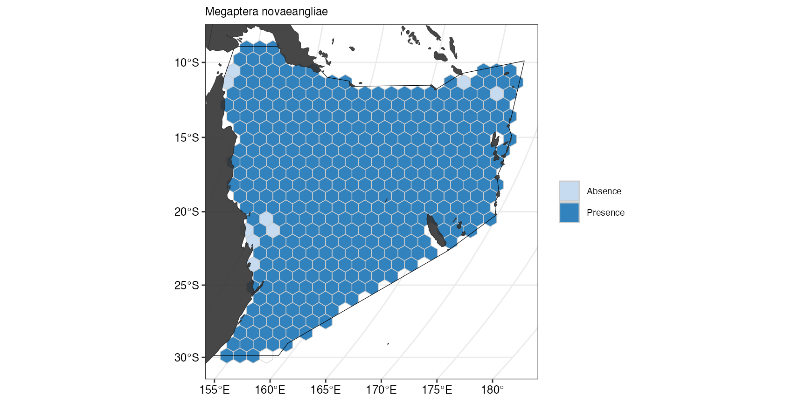
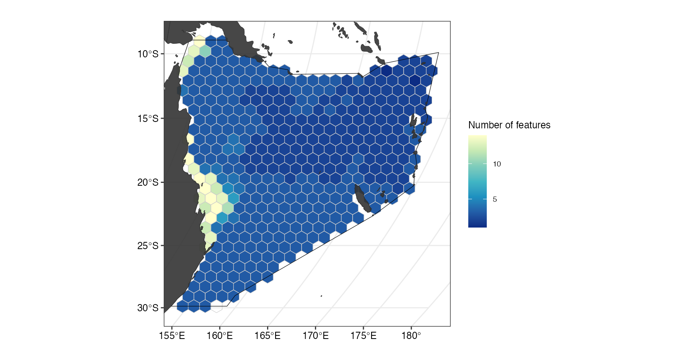
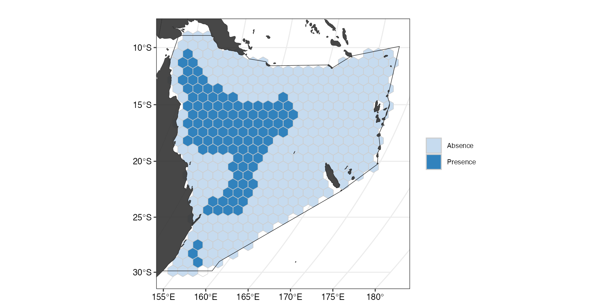

Overview
This code has been written to simplify the process for running a prioritizr analysis on a given region. It is still a work in progress so feel free to submit pull requests with new features and code improvements.
Set user parameters
You can set a region if it is defined in
splnr_get_planningUnits.
Region <- "Coral Sea" # "Australia"
Type <- "Oceans" # "EEZ"You can also define a region with square boundaries if you need.
Region <- c(xmin = 150, xmax = 160, ymin = -40, ymax = -30)Set the shape and area of the planning unit in square kilometres.
Shape <- "Hexagon" # "Shape of PUs
PU_size <- 10000 # km2Choose CRS for analysis. In this case we use Mollweide
cCRS <-
"+proj=moll +lon_0=0 +x_0=0 +y_0=0 +ellps=WGS84 +datum=WGS84 +units=m no_defs"Analysis Region
Start your analysis by defining your region and setting up the planning units.
Get the boundary for your chosen region.
Bndry <- splnr_get_boundary(Region, Type, cCRS)Get the land boundaries to remove overlap. The object “landmass” represents the land mass that should be removed (inverse = FALSE)
landmass <- rnaturalearth::ne_countries(
scale = "medium",
returnclass = "sf"
) %>%
sf::st_transform(cCRS)Create Planning Units
PUs <- splnr_get_planningUnits(Bndry, landmass, PU_size, Shape)We can check what the PUs look like
(ggPU <- splnr_plot_PUs(PUs) +
ggplot2::theme_bw()) # Plot Planning Units
If we want to add additional properties to our map, for example
landmass or the boundary, we can use splnr_gg_add().
(ggPU <- splnr_plot_PUs(PUs) +
splnr_gg_add(
Bndry = Bndry, land = landmass,
cropLand = PUs, ggtheme = "Default"
))
We can also use a customised ggplpot theme that can be
passed as a list to splnr_gg_add() and that can then be
used for all plots. For example:
splnr_theme <- list(
ggplot2::theme_bw(),
ggplot2::theme(
legend.position = "right",
legend.direction = "vertical",
text = ggplot2::element_text(size = 9, colour = "black"),
axis.text = ggplot2::element_text(size = 9, colour = "black"),
plot.title = ggplot2::element_text(size = 9),
axis.title = ggplot2::element_blank()
)
)
(ggPU <- splnr_plot_PUs(PUs) +
splnr_gg_add(
Bndry = Bndry, land = landmass,
cropLand = PUs, ggtheme = splnr_theme
))
Get the features
For our example, we will use a small subset of charismatic megafauna species of the Coral Sea to inform the conservation plan. We filtered the Aquamaps (Aquamaps.org) species distribution models for our study area for the following species:
Dict <- tibble::tribble(
~Common, ~Scientific, ~TaxGroup, ~Category,
"Green sea turtle", "Chelonia_mydas", "Reptiles", "important",
"Loggerhead sea turtle", "Caretta_caretta", "Reptiles", "important",
"Hawksbill sea turtle", "Eretmochelys_imbricata", "Reptiles", "important",
"Olive ridley sea turtle", "Lepidochelys_olivacea", "Reptiles", "important",
"Saltwater crocodile", "Crocodylus_porosus", "Reptiles", "important",
"Humpback whale", "Megaptera_novaeangliae", "Mammals", "representative",
"Common Minke whale", "Balaenoptera_acutorostrata",
"Mammals", "representative", "Dugong", "Dugong_dugon", "Mammals", "important",
"Grey nurse shark", "Carcharias_taurus", "Sharks and rays", "important",
"Tiger shark", "Galeocerdo_cuvier", "Sharks and rays", "important",
"Great hammerhead shark", "Sphyrna_mokarran",
"Sharks and rays", "representative",
"Giant oceanic manta ray", "Mobula_birostris", "Sharks and rays", "important",
"Reef manta ray", "Mobula_alfredi", "Sharks and rays", "important",
"Whitetip reef shark", "Triaenodon_obesus", "Sharks and rays", "important",
"Red-footed booby", "Sula_sula", "Birds", "important"
)These species were not chosen based on their importance for this region and only represent an example for visualization purposes.
Note: The structure of the tribbleabove
is required for some of the downstream plotting. Common denotes
the common name of a species, Scientific the scientific name in
the format used by Aquamaps, TaxGroup is the taxonomic grouping
that a species belongs to and Category represents the
importance of the species for the conservation plan.
Convert the probabilities to binary data
datEx_species_bin <- spDataFiltered %>%
splnr_apply_cutoffs(Cutoffs = 0.5)We can now look at the feature data used for the spatial plan
individually by calling splnr_plot_binFeature(), for
example to see the binary habitat suitability map for Green sea
turtles:
(ggFeature1 <- splnr_plot_binFeature(
datEx_species_bin,
datEx_species_bin$Chelonia_mydas
) +
splnr_gg_add(
PUs = PUs, Bndry = Bndry, land = landmass,
cropLand = PUs, ggtheme = splnr_theme
))
The suitable habitat for Green sea turtles as predicted by Aquamaps is restricted to few cells close to the coast. If we now compare this with the predicted suitable habitat for Humpback whales, we can see that they are fairly ubiquitous across the whole Coral Sea.
(ggFeature <- splnr_plot_binFeature(
datEx_species_bin,
datEx_species_bin$Megaptera_novaeangliae
) +
splnr_gg_add(
PUs = PUs, Bndry = Bndry, land = landmass,
cropLand = PUs, ggtheme = splnr_theme
))
In our example, this was the only reason why we classified species as either representative if their suitable habitat is wide-ranging within the study region or important if they are restricted to a few number of cells.
To get a better idea of the overall distribution of the used features, we can also plot the number of features with suitable habitat within a planning unit of the study region.
(ggFeatNo <- splnr_plot_featureNo(datEx_species_bin) +
splnr_gg_add(
PUs = PUs, Bndry = Bndry, land = landmass,
cropLand = PUs, ggtheme = splnr_theme
))
Prepare Data for prioritisation
For the spatial prioritization we also need to extract the names of
our features to pass into prioritizr.
feature_names <- splnr_featureNames(datEx_species_bin)We also create an sf object that contains all the
information needed for the prioritization.
out_sf <- datEx_species_binAdd Cost
In our example, we use a minimum set objective function, which aims to minimize the cost whilst meeting all the conservation targets. We add an area-based cost to include as little area as possible in the spatial plan whilst meeting the conservation targets. For this, all the planning units are assigned an equal cost of 1.
out_sf$Cost_None <- 1
(ggCost <- splnr_plot_cost(out_sf, Cost_name = "Cost_None") +
splnr_gg_add(
PUs = PUs, Bndry = Bndry, land = landmass,
cropLand = PUs, ggtheme = splnr_theme
))Set Targets
As shown previously, we assigned the conservation features a class reflecting their importance in the planning region. Conservation targets are then assigned a target based on their class, in our case 30% of suitable habitat of important and 10% of representative features.
catTarg <- c("important" = 0.3, "representative" = 0.1)
target <- Dict %>%
splnr_targets_byCategory(catTarg, catName = "Category")Note: The assigned classes and targets were not based on any ecological information and only chosen for visualization purposes.
Set up conservation problem
datEx_problem <- prioritizr::problem(out_sf, feature_names, "Cost_None") %>%
prioritizr::add_min_set_objective() %>%
prioritizr::add_relative_targets(target$target) %>%
prioritizr::add_binary_decisions() %>%
prioritizr::add_default_solver(verbose = FALSE)Solve the conservation problem
datEx_soln <- datEx_problem %>%
prioritizr::solve.ConservationProblem()Visualize Output
There are different ways to visualize the output of the prioritization that can be loosely grouped into three categories: + Visualization of the solution + Visualization of targets + Visualization of importance scores
Visualization of the solution
(ggSoln <- splnr_plot_solution(datEx_soln) +
splnr_gg_add(
PUs = PUs, Bndry = Bndry, land = landmass,
cropLand = PUs, ggtheme = splnr_theme
))
This plot shows the optimal solution for the planning region that meets the selected targets for the chosen features for the smallest area possible. The categorical map displays, which of the planning units were selected as important for meeting the conservation targets (dark blue) and which were not selected (light blue). This can also be done with an overlay of the cost to show how the solution avoids highly costly areas:
(ggCostOverlay <- splnr_plot_costOverlay(
soln = datEx_soln,
Cost = NA,
Cost_name = "Cost_None"
) +
splnr_gg_add(
PUs = PUs, Bndry = Bndry, land = landmass,
cropLand = PUs, ggtheme = splnr_theme
))
Note: In our example, cost is equal for all planning units.
Visualization of targets
To visualize how well the targets are met, we first need to extract how much suitable habitat of each feature are selected in the spatial plan. This also includes potential incidental coverage of feature that were not included in the spatial plan but can still be found in the planning region.
dfTarget <- splnr_get_featureRep(datEx_soln, datEx_problem,
climsmart = FALSE, solnCol = "solution_1"
)
category <- Dict %>%
dplyr::select("Scientific", "TaxGroup") %>%
dplyr::rename(feature = "Scientific", category = "TaxGroup")
(ggTarget <- splnr_plot_featureRep(dfTarget,
category = category,
nr = 1, showTarget = TRUE,
))
For a circular bar plot, one additional step of data preparation needs to be done.
# dfTargetCirc <- dfTarget %>%
# dplyr::select("feature", "value", "group") %>%
# na.omit()
# colors <- c(
# "important" = "darkgreen",
# "representative" = "darkred"
# )
# legends <- c("Important", "Representative")
# (ggCircTarg <- splnr_plot_circBplot(df = dfTargetCirc, legend_list = legends, legend_color = colors, impTarget = 30, repTarget = 10))Visualization of importance scores
Importance scores can help to assess the relative importance of an individual selected planning unit in the spatial plan (for more information, see https://prioritizr.net/reference/importance.html)
Here, we use two different importance scores, the Ferrier Score and Rarity Weighted Richness.
ggFerrier <- splnr_plot_importanceScore(
soln = datEx_soln,
pDat = datEx_problem,
method = "Ferrier",
decimals = 4,
legendTitle = "Importance Score \n(Ferrier Score)"
) +
splnr_gg_add(
PUs = PUs, Bndry = Bndry, land = landmass,
cropLand = PUs, ggtheme = splnr_theme
)
#> Ferrier Score.
ggRWR <- splnr_plot_importanceScore(
soln = datEx_soln,
pDat = datEx_problem,
method = "RWR",
decimals = 2,
legendTitle = "Importance Score \n(Rarity Weighted Richness)"
) +
splnr_gg_add(
PUs = PUs, Bndry = Bndry, land = landmass,
cropLand = PUs, ggtheme = splnr_theme
)
#> Rarity Wighted Richness.
(ggScores <- patchwork::wrap_plots(ggFerrier + ggRWR))
In our example, both scores label similar -coastal- planning units as most important for the spatial plan.
Comparing Spatial Plans
Sometimes it can be useful to have a direct comparison of two spatial plans. To show how to achieve this with this package, we first need a second conservation problem and resulting solution.
Here, our second spatial plan will include already existing marine protected areas in the area (https://www.protectedplanet.net/en/thematic-areas/wdpa?tab=WDPA) with the following characteristics: * Status = c(“Designated”, “Established”, “Inscribed”) * Designation Type = c(“National”, “Regional”, “International”, “Not Applicable”) * IUCN Category = c(“Ia”, “Ib”, “II”, “III”, “IV”)
# The user can download their own MPAs using this code,
# but below we use data already within the package.
LockedIn <- splnr_get_MPAs(PUs, "Australia") %>%
splnr_apply_cutoffs(0.5) %>%
dplyr::mutate(wdpa = as.logical(wdpa))
(ggMPA <- splnr_plot_MPAs(MPAsCoralSea) +
splnr_gg_add(
PUs = PUs, Bndry = Bndry, land = landmass,
cropLand = PUs, ggtheme = splnr_theme
))
We will also include targets based on IUCN categories to prioritise species with an IUCN status of:
- Vulnerable
- Endangered
- Critically Endangered
- Extinct in the Wild
- Extinct
We assign a 30% target to species within these categories. All species that do not fall into any of these categories receive an inverse area target, so species with a greater area of suitable habitat are assigned a lower target.
# to transform Aquamaps species names to IUCN species names
Species <- gsub("_", " ", col_name)
dfSpecies <- data.frame(Species)
minTarget <- 0.1
maxTarget <- 0.2
IUCN_IA_Targets <- splnr_targets_byInverseArea(
datEx_species_bin,
minTarget,
maxTarget
) # inverse area target
IUCN_IA_Targets <- Targets %>%
splnr_get_IUCNRedList(species_col = "Species") %>% # Add RL data to the df
splnr_targets_byIUCN(targ = 0.3)Note: Accessing the IUCN database requires a login
token from rl_use_iucn() that needs to be added to the
environment using
Sys.setenv(IUCN_REDLIST_KEY = "[Your Token]"). You can
start by running rredlist::rl_use_iucn().
Set up second conservation problem
datEx_problem2 <- prioritizr::problem(out_sf, feature_names, "Cost_None") %>%
prioritizr::add_min_set_objective() %>%
prioritizr::add_relative_targets(IUCN_IA_Targets$Target) %>%
prioritizr::add_locked_in_constraints(as.logical(MPAsCoralSea$wdpa)) %>%
prioritizr::add_binary_decisions() %>%
prioritizr::add_default_solver(verbose = FALSE)
# Add a solution object
datEx_soln2 <- datEx_problem2 %>%
prioritizr::solve.ConservationProblem()
(ggSoln2 <- splnr_plot_solution(datEx_soln2) +
splnr_gg_add(
PUs = PUs, Bndry = Bndry, land = landmass,
cropLand = PUs, ggtheme = splnr_theme
))
But we locked in areas that were already existing MPAs. If we want to
show the overlap between the selected planning units and the current
MPAs, we can can add this to the
splnr_gg_add()function.
(splnr_plot_solution(datEx_soln2) +
splnr_gg_add(
PUs = PUs, Bndry = Bndry, lockedInAreas = MPAsCoralSea,
colInterest = MPAsCoralSea$wdpa, Type = "Full",
colorLI = "lightgrey", alphaLI = 0.2, land = landmass,
cropLand = PUs, ggtheme = splnr_theme
))
If we instead only want to see the contours of the locked in areas we
can set Type = "Contours"in
splnr_gg_add().
(splnr_plot_solution(datEx_soln2) +
splnr_gg_add(
lockedInAreas = MPAsCoralSea, colInterest = MPAsCoralSea$wdpa,
Type = "Contours", land = landmass,
cropLand = PUs, ggtheme = splnr_theme
))
Visualize comparison
(ggComp <- splnr_plot_comparison(datEx_soln, datEx_soln2) +
splnr_gg_add(
PUs = PUs, Bndry = Bndry, land = landmass,
cropLand = PUs, ggtheme = splnr_theme
))
This plot shows how the first solution (without current MPAs) differs from the second solution (including current MPAs. The categorical map displays, which of the planning units were selected in solution 2 but not in solution 1 (red), in solution 1 but not in solution 2 (blue), or selected in both solutions (grey).
CorrMat <- splnr_get_kappaCorrData(list(datEx_soln, datEx_soln2),
name_sol = c("soln1", "soln2")
)
(ggCorr <- splnr_plot_corrMat(CorrMat,
AxisLabels = c("Solution 1", "Solution 2")
))The correlation matrix shows the similarity as the Cohen’s Kappa correlation between solution 1 and solution 2.
Plotting selection frequency
Sometimes when multiple spatial plans are generated, we are interesting in how many times a planning unit is selected across the array of solutions. To demonstrate how this can be done using this package, we first create an array (= portfolio) of solutions. One example of this is by using the portfolio
datEx_soln_portfolio <- datEx_problem %>%
prioritizr::add_cuts_portfolio(5) %>% # create a portfolio of solutions
prioritizr::solve.ConservationProblem()
selFreq <- datEx_soln_portfolio %>% # calculate selection frequency
sf::st_drop_geometry() %>%
dplyr::mutate(selFreq = as.factor(rowSums(
dplyr::select(., dplyr::starts_with("solution_"))
))) %>%
sf::st_as_sf(geometry = datEx_soln_portfolio$geometry) %>%
dplyr::select(selFreq)
(ggselFreq <- splnr_plot_selectionFreq(selFreq) +
splnr_gg_add(
PUs = PUs, Bndry = Bndry, land = landmass,
cropLand = PUs, ggtheme = splnr_theme
))